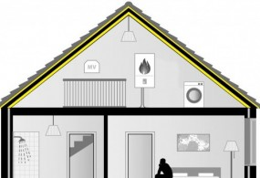

Geluidisolatie Isolgomma van Imbema
Isolgomma® is een ultra dunne akoestische wand- en vloerisolatie voor renovatie en nieuwbouw. Het aanbrengen van voldoende akoestische isolatie in een bestaande situatie blijkt vaak een probleem. De vloer gaat tot wel 4 cm omhoog. Daarnaast verminderd akoestische vloer-isolatie het effect van vloerverwarming. Om in deze veelvoorkomende situaties een oplossing te bieden, ontwikkelde Isolgomma de ultra dunne akoestische isolatie Sylwood Line en Sylcer Line. Deze zijn speciaal ontwikkeld voor houten vloeren, laminaat en parket en voor tegels en plavuizen en bieden net zoveel demping van lawaai dan klassieke isolatie. Het gebruik van vloerverwarming is ook geen enkel probleem. Voor de akoestische en thermische wandisolatie is een aantal varianten aanwezig, die de uitstekende elastische en absorptie-eigenschappen van rubber combineren met de thermische eigenschappen van polyesterveze| Toepassing | Boven/onderzijde vloer/wand, hout of beton |
| Materiaal | SBR en EPDM granulaatplaat |
| Doe-het-zelf | Eenvoudig zelf te doen |
| Subsidie mogelijk | Nee |
| Isolatiewaarde | Rd waarde 0,85 W/m2K bij 4,0 cm dikte λD 0,047 |